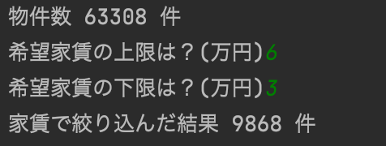
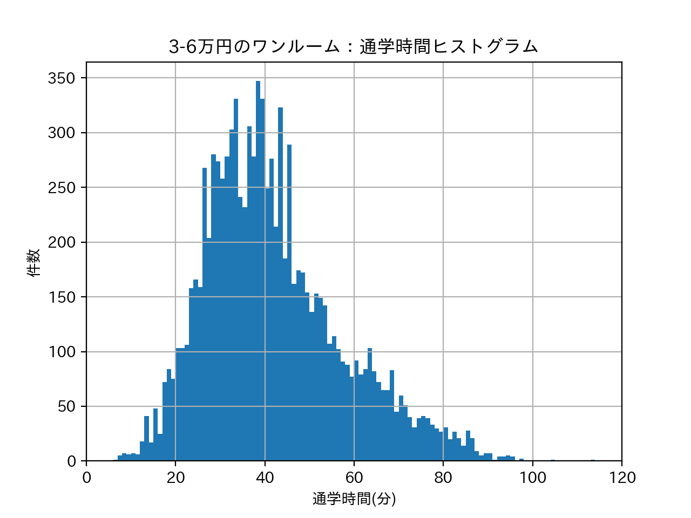
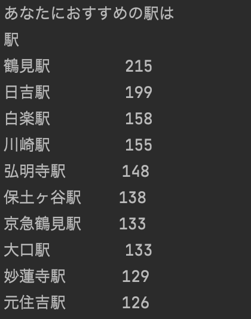
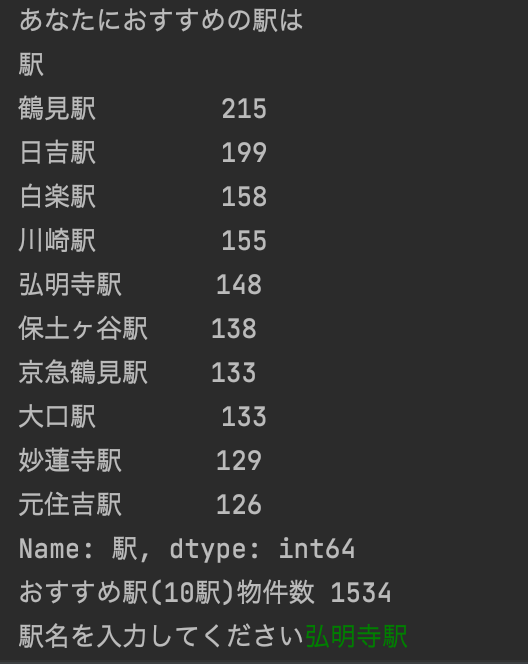
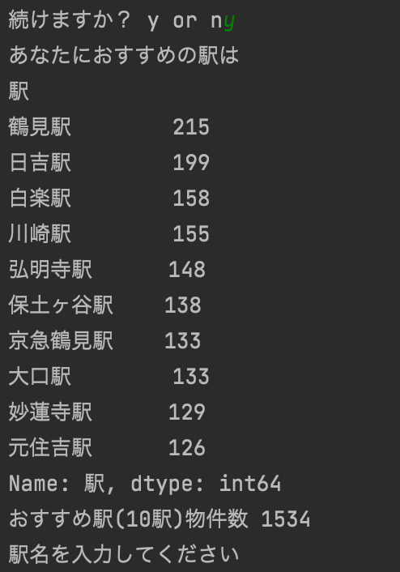

道用も山崎先生の課題をやってみた
pandas、matplotlibは詳しくないので、学生気分に戻って山崎先生のデータサイエンスの課題をやってみました。
学生が住むための物件探しを目的として、おすすめの駅という観点から分析を進めていきます。
基本的には家賃、通学時間、バスの利用有無が大きな決定要素と考えられるので、それらを中心に考えていきます。
ワンルーム家賃相場感
学生が住むための物件探しを目的としているため、まずはワンルームに絞って相場感をみてみてみます。
ワンルームの相場は5〜6万円が多いようです。

路線毎に違いはあるか？？
田園都市線、相鉄本線は5万円以下の物件も豊富のようですが、
物件数が多い京急本線、東急東横線、JR京浜東北線本線、JR南武線は5〜6万円が多いようです。

家賃を絞って通学時間を見てみる
ワンルーム（63308件）から家賃を3〜6万円に絞ると、24288件になりました。

この4288件を対象に通学時間を概観してみると、40分前後の物件が多いようです。
30分程度の物件もかなり存在することから、みなとみらいは都会ですが学生の一人暮らし環境としては悪く無いように感じます。

通学時間、バスの有無でも物件を絞る→おすすめ駅を抽出
とりあえず、通学時間50分という条件でさらに物件を絞り込むと、15910件になりました。
さらに、、バスは利用せずという条件にすると14684件にまで絞り込まれます。
条件に合致する物件が多い駅Top10を「おすすめ駅」としました。
おすすめ駅とそれぞれの物件数は下記の図の通りです。

下のヒストグラムはおすすめ駅の家賃制限（3〜6万円）内の物件の分布です。
おすすめ駅の家賃分布を見てみると、保土ヶ谷、弘明寺、白楽には４万円以下の物件が結構ありそうです。
日吉、元住吉は5〜6万円の物件が中心のようです。
物件の表示
おすすめ駅の中での駅名を入力します。下図の例では弘明寺駅を入力してあります。

すると、入力した駅の物件一覧が見れます。URLをクリックすると物件情報もみることができます。
続けますか？y or n で y を入力すると駅の入力に戻ることができます。

ソースコード
- import pandas as pd # データ分析に用いるライブラリ
- import matplotlib.pyplot as plt # グラフ表示に用いるライブラリ
- pd.set_option('display.unicode.east_asian_width', True) # 表示のずれを少し緩和
- plt.rcParams['font.family'] = 'IPAexGothic' # グラフ表示におけるフォントの指定
- data_path = "./data.csv"
- df_data = pd.read_csv(data_path, encoding="utf-8-sig")
- # print(df_data["合計時間"].describe())
- # print(df_data.groupby(["間取り"]).count())
- print("物件数", len(df_data), "件")
- # ワンルーム全体の相場を調べる---------------------------------------
- mask=(df_data["間取り"]=="ワンルーム")
- df_selected_roomtype=df_data[mask]
- df_selected_roomtype.loc[:, "家賃"].hist(range=(0,20),bins=40)
- plt.xlabel("ワンルーム家賃(万円)") # 横軸のラベル
- plt.ylabel("件数") # 縦軸のラベル
- plt.xlim(0, 16)
- plt.title("ワンルーム家賃のヒストグラム") # グラフのタイトル
- plt.show()
- # -------------------------------------------------------------
- # 路線毎のワンルーム相場 -------------------------------------
- #エラーが出たので山崎先生に教えてもらいました。
- axes = df_selected_roomtype.loc[:, "家賃"].hist(by=df_selected_roomtype.loc[:, "路線"],
- range=(0, 10), bins=30,
- figsize=(14, 7),
- sharex=True, sharey=True)
- for ax in axes.reshape(-1):
- ax.grid(b=True) # グリッドを表示
- ax.set_xlabel("家賃(万円)") # 横軸のラベル
- ax.set_ylabel("件数") # 縦軸のラベル
- # ax.set_ylim(0, 120) # 縦軸の目盛りの最小値と最大値の指定
- plt.suptitle("路線ごとのワンルーム家賃のヒストグラム") # グラフ全体のタイトル
- plt.subplots_adjust(top=0.92, # グラフ位置の微調整
- hspace=0.3) # グラフ間の微調整
- plt.show()
- # ------------------------------------------------------
- # 希望家賃(万)
- rent_upper = int(input("希望家賃の上限は？(万円)"))
- rent_lower = int(input("希望家賃の下限は？(万円)"))
- # 家賃で絞り込む
- mask = (df_data['家賃'] <= rent_upper) & (df_data['家賃'] >= rent_lower)
- # 絞った内容ををfilter_dfに入れる
- filter_df = df_data[mask]
- print("家賃で絞り込んだ結果", len(filter_df), "件")
- # 通学時間---------------------------------------------------
- filter_df.loc[:, "合計時間"].hist(range=(0,120),bins=120)
- plt.xlabel("通学時間(分)") # 横軸のラベル
- plt.ylabel("件数") # 縦軸のラベル
- plt.xlim(0, 120)
- plt.title("ワンルーム家賃のヒストグラム") # グラフのタイトル
- plt.show()
- #----------------------------------------------------------
- # # 通学時間（分）
- commuting_time = float(input("希望通学時間上限は?(分)"))
- mask = (filter_df['合計時間'] <= commuting_time)
- # filter_dfをさらに合計時間で絞り込む(filter_dfを上書き)
- filter_df = filter_df[mask]
- print("家賃,通学時間で絞り込んだ結果", len(filter_df), "件")
- # バスは使いますか?
- bus = input('バスは使ってもいいですか？ y or n')
- if bus == 'n':
- # バスなしであれば、バスは0
- bus_num = 0
- else:
- # とりあえずありえない数字を入れておく
- bus_num = 10000
- mask = (filter_df['バス'] <= bus_num)
- # filter_dfをさらにバス有無で絞り込み
- filter_df = filter_df[mask]
- print("家賃,通学時間、バス有無で絞り込んだ結果", len(filter_df), "件")
- # 条件にあう分件が多い駅top10を表示(書き方難しかった)
- filter_top10_df = filter_df.groupby(['駅'])['駅'].count().sort_values(ascending=False).head(10)
- # 続けるかどうかのフラグ
- flag = True
- while (flag):
- print('あなたにおすすめの駅は')
- print(filter_top10_df)
- # 条件に合致する物件数が多い上位10の駅を「おすすめ駅」とする
- # 絞り込んだ結果をさらに「おすすめ駅」で絞り込み(ここちょっと書き方難しい)
- mask = filter_df['駅'].isin(filter_top10_df.index)
- # filter_dfからおすすめ駅に絞り込んだ結果をfilter_top10_station_dfに入れる
- filter_top10_station_df = filter_df[mask]
- # filter_top10_station_df.loc[:, "家賃"].hist(by=filter_top10_station_df.loc[:, "駅"],range=(rent_lower,rent_upper),bins=10,figsize=(8, 8))
- # plt.show()
- # ヒストグラム-------------------------------------
- #エラーが出たので山崎先生に教えてもらいました。
- axes = filter_top10_station_df.loc[:, "家賃"].hist(by=filter_top10_station_df.loc[:, "駅"],
- range=(rent_lower, rent_upper), bins=10,
- figsize=(10, 8),
- sharex=True, sharey=True)
- for ax in axes.reshape(-1):
- ax.grid(b=True) # グリッドを表示
- ax.set_xlabel("家賃(万円)") # 横軸のラベル
- ax.set_ylabel("件数") # 縦軸のラベル
- plt.suptitle("おすすめ駅：家賃のヒストグラム（家賃制限内）") # グラフ全体のタイトル
- plt.subplots_adjust(top=0.92, # グラフ位置の微調整
- hspace=0.3) # グラフ間の微調整
- plt.show()
- # ------------------------------------------------------
- print("おすすめ駅(10駅)物件数", len(filter_top10_station_df))
- station = input('駅名を入力してください')
- # おすすめ駅Top10（filter_top10_station_df）から駅名で更に絞り込みfilter_selected_station_dfに入れる
- mask = (filter_top10_station_df['駅'] == station)
- filter_selected_station_df = filter_top10_station_df[mask]
- print(station + "の合致物件数", len(filter_selected_station_df), "件")
- # 全件表示させるようにする
- pd.set_option('display.max_rows', None)
- pd.set_option('display.max_columns', None)
- # 選択した駅の駅、路線、家賃、名称、合計時間、URLを表示する
- print(filter_selected_station_df[["駅", "路線","家賃", "名称", "合計時間", "URL"]].sort_values("家賃").to_string(index=False))
- print("----------------------------------------------------------------")
- loop_input = input("続けますか？ y or n")
- if loop_input == 'n':
- flag = False
使い方動画